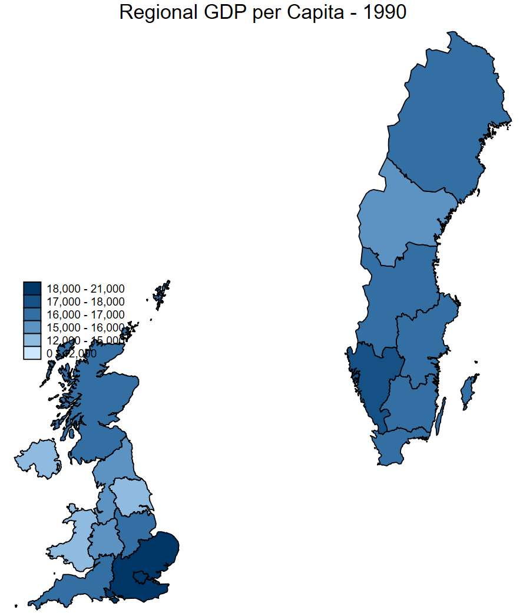
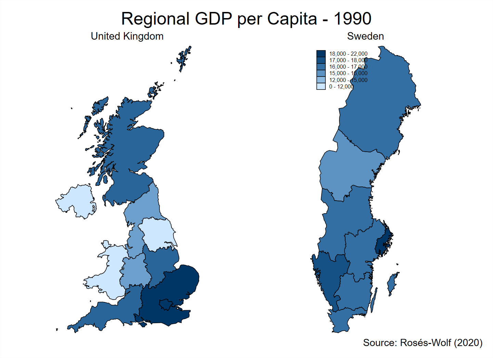
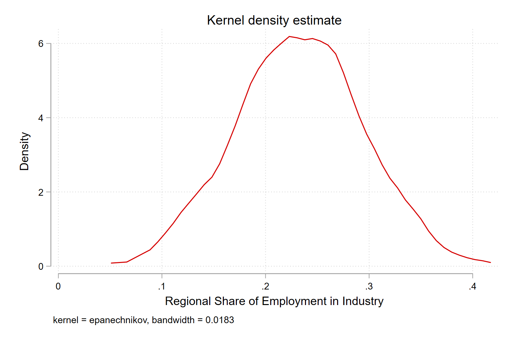
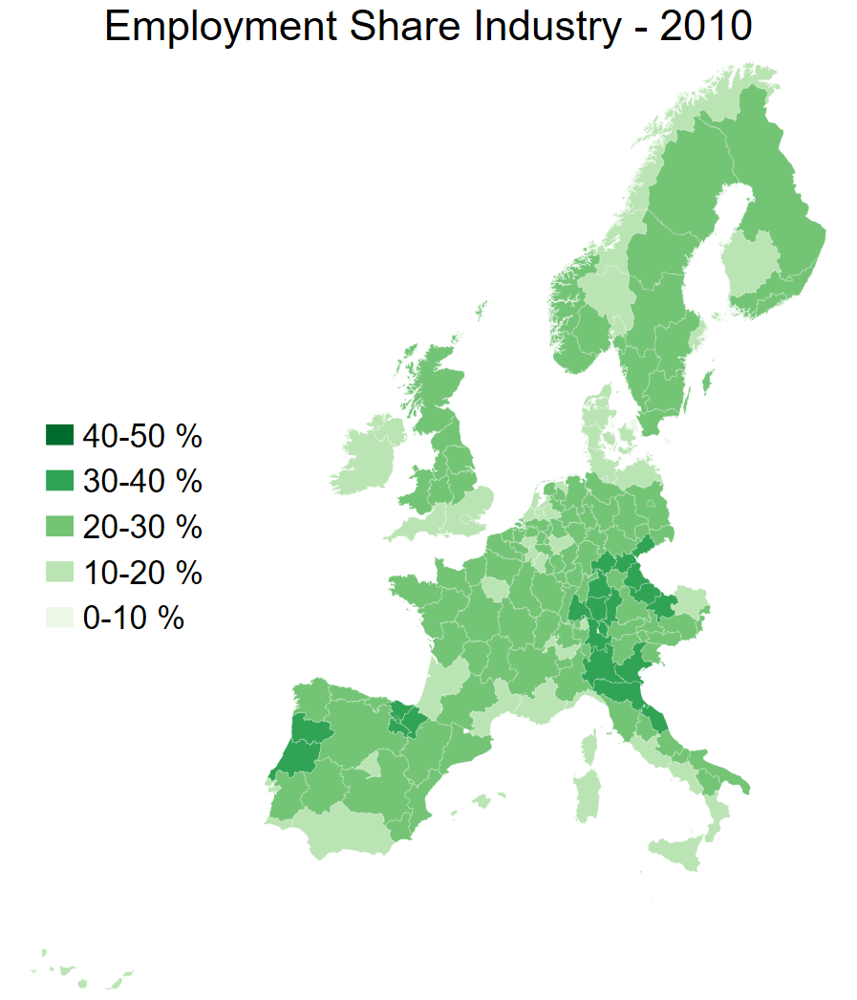
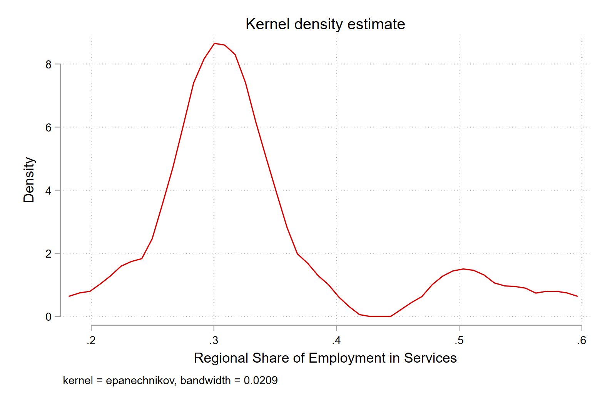
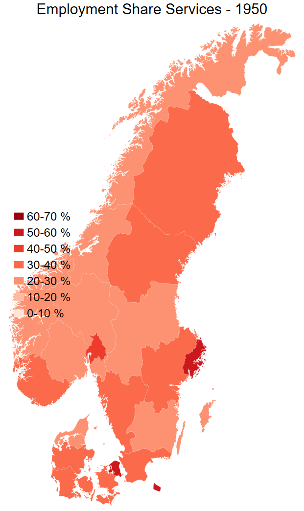
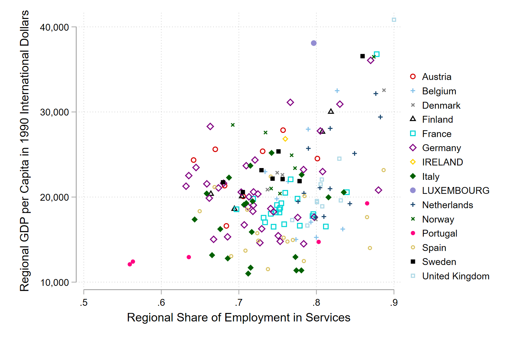
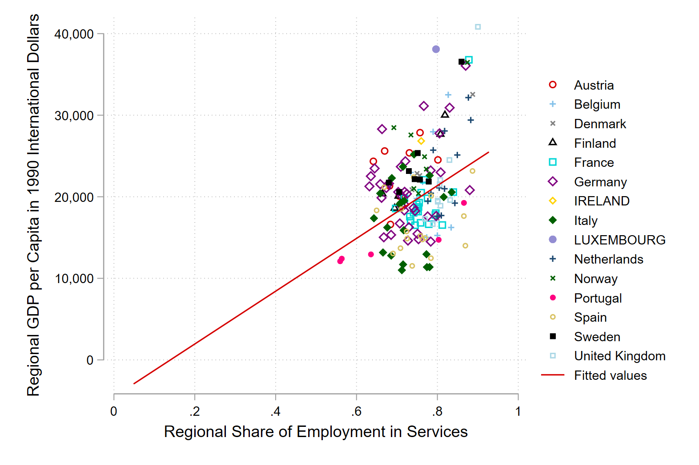
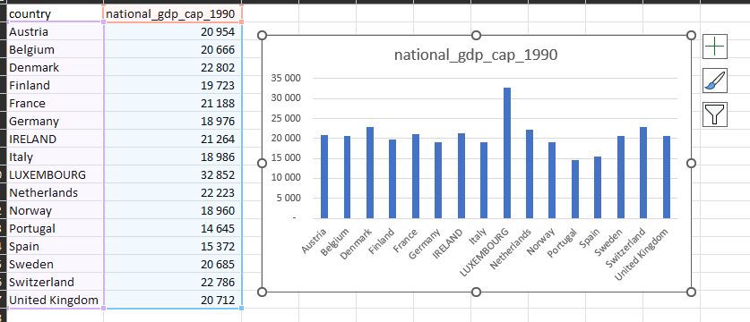

cd "C:/Users/User/Documents/Recon/EOSE09/stata_files/" # set your directory
use regional_dataset, clear
format regional_gdp_cap_1990 %12.0fc # 12 numbers left of the decimal point; 0 to the right; commas to denote thousandsLab 1 Exercises
Purpose
📈 Stata is a powerful software for data analysis and visualization. This exercise set aims to showcase the capabilities of Stata in creating informative graphics 📊. We will be using data on the UK and Sweden 🇬🇧🇸🇪 to demonstrate the process of making a map 🗺️, a combined plot 📈, and a summary table 📊. The purpose of this accompanying post is to provide a step-by-step guide 💡 on how to use Stata’s built-in tools 🛠️ to create effective visualizations 🎨 that help communicate insights from your data 🙌.
Get started
As before, we want to load our data from the regional_dataset.dta file.
Question 1
• Map of GDP per capita in Sweden and the United Kingdom in 1990
There are two ways to do this.
Method 1: use their locations on a map
First we create a variable for if the country is Sweden or the UK.
Then we use this vairable to create the map with an if statement.
Note that you need to change your breaks in order to display the full range of data.
gen uk_sv = .
replace uk_sv = 1 if country == "Sweden" | country == "United Kingdom"
spmap regional_gdp_cap_1990 using "nutscoord.dta" if year == 1990 & uk_sv == 1, id(_ID) fcolor(Blues2) legend(pos(9)) legstyle(2)
title("Regional GDP per Capita - 1990", size(medium))
clmethod(custom) clbreaks(0 12000 15000 16000 17000 18000 21000)
Method 2: graph combine
Here we make two graphs with the same scale, but only the graph for Sweden includes a legend.
The UK map has the legend suppressed with the leg(off) command.
Then we name each, and combine it with a title in the final step.
spmap regional_gdp_cap_1990 using "nutscoord.dta" if year == 1990 & country == "United Kingdom", id(_ID) fcolor(Blues2) ///
title("United Kingdom", size(medium)) ///
name(UK_GDP_1990, replace) ///
leg(off)
spmap regional_gdp_cap_1990 using "nutscoord.dta" if year == 1990 & country == "Sweden", id(_ID) fcolor(Blues2) legend(pos(10)) legstyle(2) ///
title("Sweden", size(medium)) ///
clmethod(custom) clbreaks(0 12000 15000 16000 17000 18000 22000) ///
name(SV_GDP_1990, replace)
graph combine UK_GDP_1990 SV_GDP_1990, graphregion(color(white)) ///
title("Regional GDP per Capita - 1990") ///
note(Source: Rosés-Wolf (2020), size(small) position(5)) ///
scheme(s2mono)
Question 2
• Map of share of employment in industry in 2010 across the whole dataset
First we must ask where the cutoffs should be in the legend.
We can draw a density plot to find out.
kdensity employment_share_industry if year == 2010
Next we use this information to create breaks between 10 percent and 40 percent, where the bulk of the distribution is.
spmap employment_share_industry using "nutscoord.dta" if year == 2010, id(_ID) fcolor(Greens) legstyle(2) ///
title("Employment Share Industry - 2010", size(large)) ///
osize(0.02 ..) ocolor(white ..) ///
clmethod(custom) clbreaks(0 (0.1) 0.5) ///
legend(pos(9) size(medium) rowgap(1.5) label(6 "40-50 %") label(5 "30-40 %") ///
label(4 "20-30 %") label(3 "10-20 %") label(2 "0-10 %") label(1 "No Data")) ///
ndfcolor(gray) ndocolor(white ..) ndsize(0.02 ..)
Question 3
• Map of share of employment in services in 1950 in Scandinavia
Generate variable for Scandnavian countries
gen scandinavia = .
replace scandinavia = 1 if country == "Sweden" | country == "Denmark" | country == "Norway"Check where the weight of the distribution is
kdensity employment_share_services if year == 1950 & scandinavia == 1
spmap employment_share_services using "nutscoord.dta" if year == 1950 & scandinavia == 1, id(_ID) fcolor(Reds) legstyle(2) ///
title("Employment Share Services - 1950", size(large)) ///
osize(0.02 ..) ocolor(white ..) ///
clmethod(custom) clbreaks(0 (0.1) .7) ///
legend(pos(9) size(medium) rowgap(1.5) label(8 "60-70 %") label(7 "50-60 %") ///
label(6 "40-50 %") label(5 "30-40 %") ///
label(4 "20-30 %") label(3 "10-20 %") label(2 "0-10 %") label(1 "No Data")) ///
ndfcolor(gray) ndocolor(white ..) ndsize(0.02 ..)
Question 4
Scatterplot of GDP per capita in 1990 dollars on the x-axis and share of employment in services on the y-axis for the year 2015. Make the colour of the points on the scatter plot show what country it is.
Here we need an additional package to help us.
ssc install sepscatterBasic scatter plot
sepscatter regional_gdp_cap_1990 employment_share_services if year == 2015, separate(country)
Add in linear regression line
sepscatter regional_gdp_cap_1990 employment_share_services if year == 2015, separate(country) addplot(lfit regional_gdp_cap_1990 employment_share_services if regional_gdp_cap_1990 > 0.5)
Question 5
• Make a table of the mean GDP per capita by country in 2000. Export it with the Outreg2 command.
Remember how we made a national GDP per capita variable
bysort country year: egen national_gdp_1990 = total(regional_gdp_1990)
bysort country year: egen national_population = total(regional_population)
gen national_gdp_cap_1990 = national_gdp_1990 / national_populationNow format this number
format national_gdp_cap_1990 %12.0fc # 12 numbers left of the decimal point; 0 to the right; commas to denote thousandsWe could do this with Outreg2. We can also just keep the data that we want, and export it as a csv file. This is quick and dirty, but it works.
keep country national_gdp_cap_1990 year
keep if year == 2000
duplicates drop
export delimited using national_gdp_cap_1990.csv, replace Open this file in excel Go to the data tab, select text to columns, delimited, comma, and then format it.
We can make a nice little bar graph with in Excel too.
